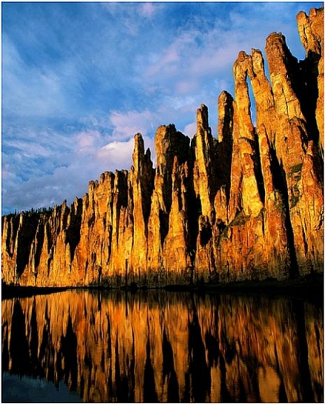
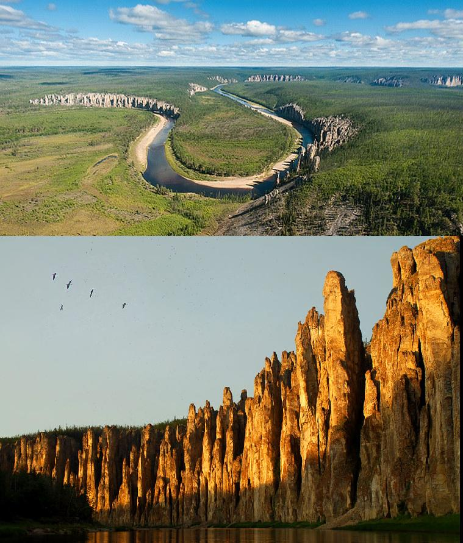

Немного информации
Lena pillars of Yakutia are among the UNESCO World Heritage Sites, and at the same time they are the hallmark of Yakutia.
Since 1995, the Lena pillars Natural Park received the status of a national reserve. Tourists from near, foreigners and scholars interested Lena pillars.